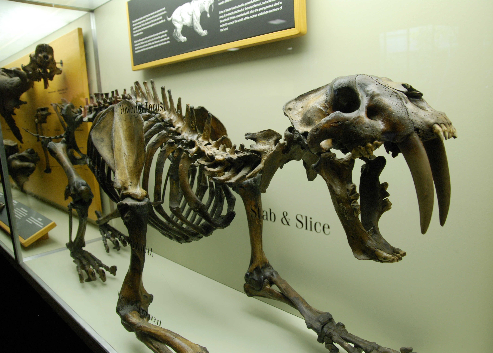
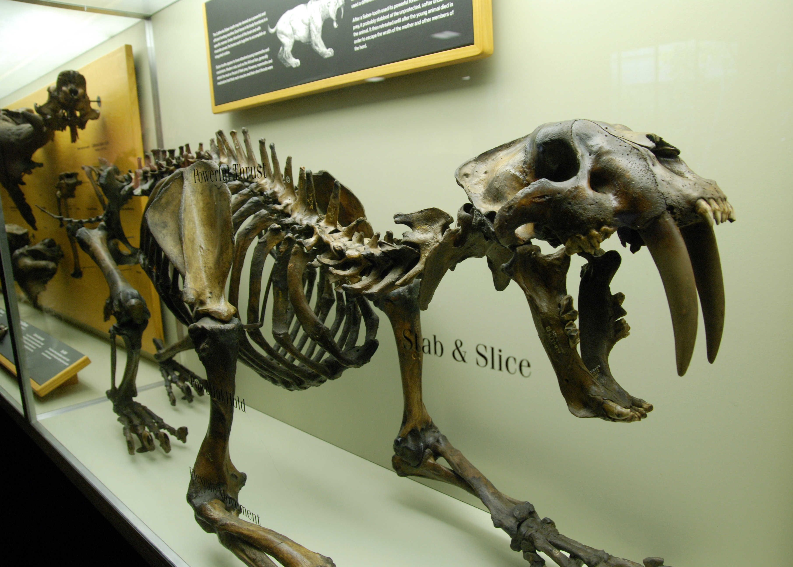

BESTIARIO FOSIL
este sito web es un catalogo de bestias prehistoricas,contiene la informacion de multples especies,se mostrara su nombre, grupo al que pertenecen, el periodo/s donde estaban vivos,los lugares donde sus restos fosiles fueron encontradas y la dimesion o posible dimension que tenian en vida, se daran caracteristicas generales de cada especie.¿Que comia?¿donde vivia?¿sus costumbres?¿sus habitos reproductivos?¿su aspecto?entre otras cosas,siempre lo mas resumidas posibles.Hay criaturas que no entraron al bestiario por la poca informacion que se sabe de estas o por no ser demasiado llamativas.las ilustraciones no fueron hechas por mi, el credito es para sus respectivos autores
 MAMMUTHUS
SMILODON

TRICERATOPS
VELOCIRAPTOR
MAMMUTHUS
SMILODON

TRICERATOPS
VELOCIRAPTOR
 MEGANEURA
MEGANEURA